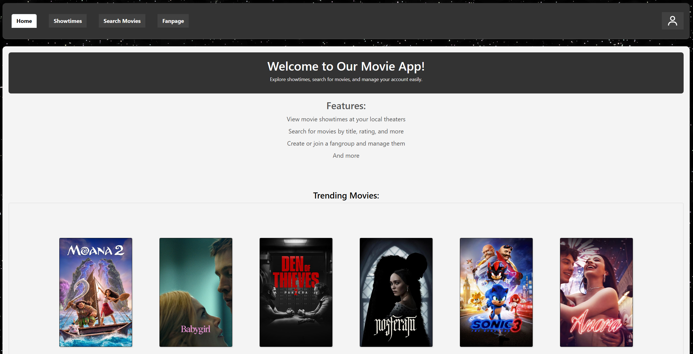
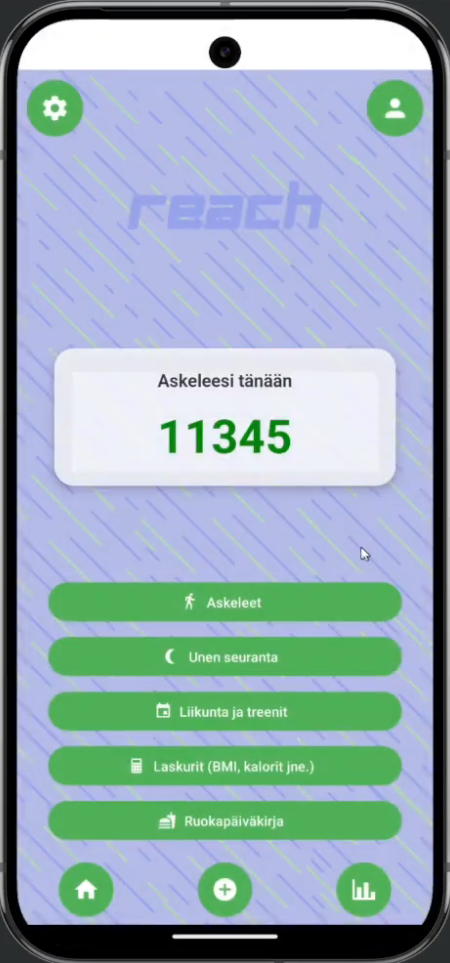

Speden spelit -speedtest
Oct–Dec 2023
The task was to build an implementation that resembled the image. An Arduino microcontroller, buttons, and led lights were used, and the result was showed on a seven-segment display. The idea was to press a button corresponding to the light. Unlike the picture, the buttons and lights were separate.
If a correct button was pressed, the score was added by one, displayed real-time on the display, and next light was turned on. If a wrong button was pressed, the game ended and there was a certain sound for losing the game. The logic for the game was programmed in Arduino IDE.
Virtual ATM simulation
Mar–May 2024
We implemented a virtual ATM simulation with Qt as showed in the picture. RFID reader was used to get into the account. The UI is made with Qt Widget and all of the information is retrieved from a MySQL database using HTTP requests.
The features include changing account to debit/credit, deposit, withdraw, account balance, and transactions.
Project GitHub: https://github.com/vsuho/Virtual-ATM-simul
Movie app
Oct–Dec 2024
We implented a movie web page with React. The features of the app include displaying trending movies on the front page, browsing movies using different filters, and looking up Finnkino showtimes that are received from Finnkino API. An account can be created
to create or join fangroups and write reviews for movies. MySQL database was used to store all user information and backend was created with Node.js.

Project GitHub: https://github.com/movieApp-19
Health app for mobile
Mar–May 2025
We implemented a mobile health app using React Native and Expo framework. The features include steps, sleep, excercise, calculators (BMI, calories), and eating. Fineli API is used to get the ingredients of a certain food, which are then used in the app.
Also there are graphs to visualise the steps and sleep data.

Project GitHub: https://github.com/Mobile-development-R19/Health-app
Godot "horror" game
Oct–Dec 2025
We implemented a simple 3D game with Godot engine and GDScript. The player spawns in basement and has to find a key to unlock the door to get to the first floor. There is also a key in the first floor, which is needed to unlock the door that gets the player out from the house and wins the game. The player can find different items, such as weapons, to fight enemies and health packs to regain health.

Project Github: https://github.com/Godot3D-Peliprojekti/3DGodot
Demovideo: YouTube
Haltian IoT Platform Security Testing
Feb–Apr 2026
As part of an international team of OAMK students, I took part in an ethical security assessment of Haltian's IoT platform. The project included both black-box and white-box phases. During the black-box phase, we gathered as much information about the system as we could from the outside. In the white-box phase, we were given demo credentials to access the platform.
In both phases, we looked for vulnerabilities using resources such as the OWASP Web Security Testing Guide
An NDA prevents me from sharing the findings or technical details. However, Haltian was pleased with the project results, and I can share a certificate upon request.
Software Hardening for Developers
May–Jul 2026
An independent, AI-assisted summer project at OAMK, documented as a learning diary (10 ECTS credits / 270 hours).
The course consists of eight chapters covering software security. It is mainly hands-on: using a Linux virtual machine, I tried out various tools, introduced vulnerabilities into code, and then fixed them.
Course topics:
- Secure development environments
- Memory safety (C/C++)
- Programming-language-specific software hardening
- Operating system hardening
- Cryptography, secrets, and authentication in code
- Software supply chain security
- Software hardening tools
Learning diary: View PDF (Finnish)
Course page: tl.oamk.fi/ai
Building a Custom Linux with Yocto
Jul–Sep 2026
An independent, AI-assisted summer project at OAMK, documented as a learning diary (10 ECTS credits / 270 hours).
The course consists of seven chapters whose exercises guided me through building a small Yocto Poky Linux image step by step.
Course topics:
- The embedded Linux landscape
- Yocto fundamentals: Poky, BitBake, layers, and recipes
- Image customization: recipes and image features
- Configuring and building the vanilla Linux kernel source
- Kernel customization: patches and out-of-tree modules
- Boot methods: bootloaders and initramfs
- Running a custom image: QEMU, KVM, and a Windows virtual machine
Learning diary: View PDF (Finnish)
Course page: tl.oamk.fi/custom_linux/